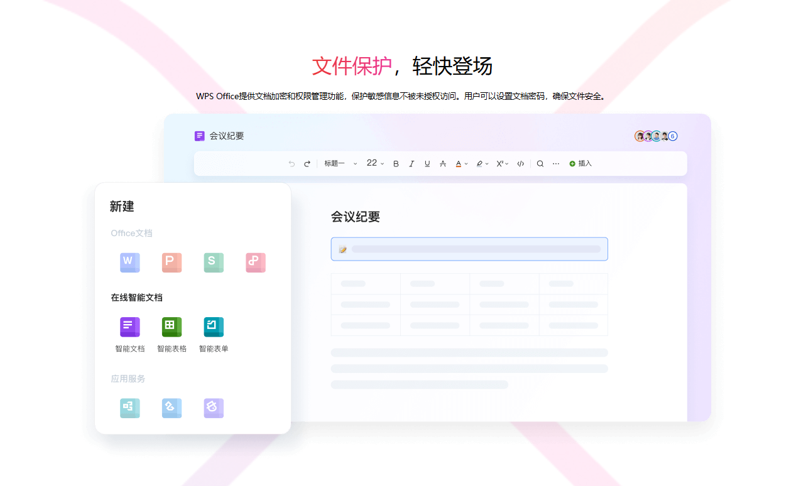

下载 WPS Office
全球高品质免费办公软件，涵盖Word文字、Excel表格、PPT演示、PDF编辑等多种功能，完美兼容Microsoft Office格式。
免费下载 WPS Office版本 11.2.0.11156 | 88.5 MB | 支持 Windows 7/8/10/11
为什么选择 WPS Office？
完全免费 - 个人用户可免费使用所有基础功能，无广告干扰
兼容性强 - 完美支持Microsoft Office格式，无缝打开和编辑DOC、XLS、PPT等文件
体积小巧 - 安装包不到100MB，启动速度快，占用系统资源少
云服务集成 - 支持文档云同步，多设备访问，随时随地处理文档

文件保护
设置密码保护敏感文件，确保文件安全
云端协作
多人实时协作，提高团队工作效率
智能办公
AI辅助写作和数据分析功能
多平台支持
Windows、Mac、Android、iOS全覆盖